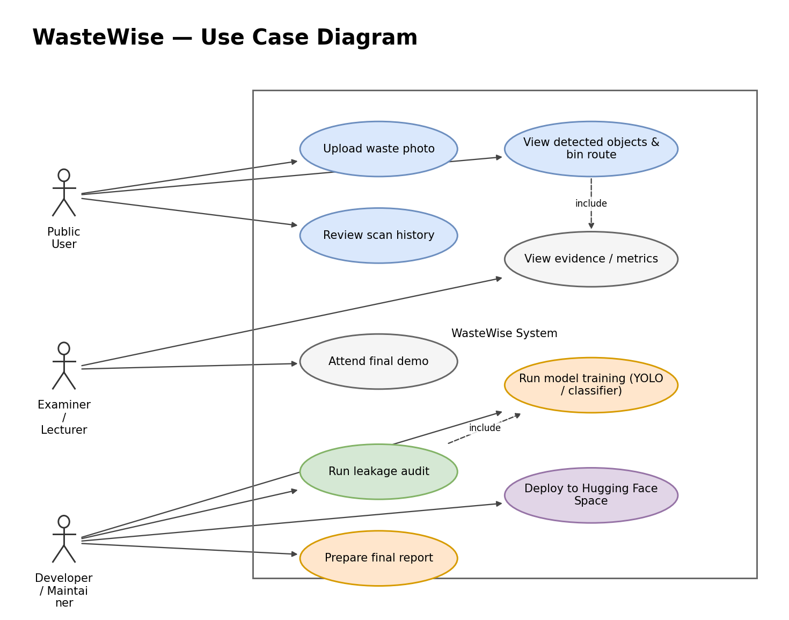
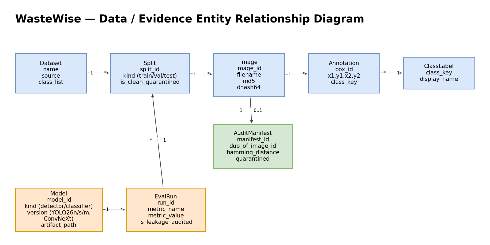

Upload image
A JPG, PNG, or WEBP photo of waste. Saved scans stay in browser history for review and hard-case collection.
01 / 12 Introduction
WasteWise is a Final Year Project on automated waste understanding: a two-stage deep-learning pipeline (YOLO26m finds every object, a ConvNeXt classifier verifies the material), backed by a classical machine-learning branch for explainable evidence. Every number on this site survives a leakage-audited test set.

Manual waste sorting is slow and error-prone, and recycling streams are easily contaminated. WasteWise localizes each waste object in a photo, verifies its material, and routes it to the correct bin, with an honest, audited account of what works and what does not.



Twelve stops, in report order. Use the arrow keys or the Next button to move through them.
02 / 12 Dataset Overview
No single public dataset covers waste detection well: TACO has real litter photos but sparse labels, TrashNet has clean studio crops but no boxes, WaDaBa focuses on plastic subtypes, and GINI frames garbage-vs-clean scenes. The project merges them, plus Roboflow garbage-classification sources and the PlastOPol field dataset, into one YOLO-format dataset with 7 material classes. After tuning, the working dataset holds 31,379 images and 67,385 boxes (24,668 / 3,298 / 3,413 train/valid/test).



03 / 12 Image Preprocessing
Merging is not enough. The raw union is imbalanced, contains invalid and tiny boxes, and duplicates the same photos across sources. The preprocessing pass removes invalid label rows and exact duplicates, drops degenerate boxes, re-splits train/valid/test by dominant class, and caps per-class counts so no material dominates. At inference time the same discipline applies: each detected box is cropped with 10 px padding, boxes under 24×24 px are rejected, and each crop is summarized into 637 handcrafted features (8 spatial + 9 FFT + 44 color + 576 HOG) for the ML branch.


04 / 12 Exploratory Data Analysis
EDA on the merged dataset answered three questions: is the class balance usable, how small are the objects, and, most importantly, can the test set be trusted? The third question found a real evaluation bug: perceptual hashing showed 2,406 test images (43%) of an earlier classifier evaluation set also appeared in training, inflating its accuracy from an honest 91.77% to 94.30%. All headline numbers on this site are measured after that leakage was quarantined.


05 / 12 Model Pipeline
Stage 1 finds objects, which is what YOLO is good at. Stage 2 verifies the material of each crop, which is what a dedicated classifier is good at, and filters false alarms with a Background veto class.
A JPG, PNG, or WEBP photo of waste. Saved scans stay in browser history for review and hard-case collection.
YOLO26m proposes a box around every candidate object. 100-epoch retrain, promoted from YOLO26s for higher field recall and precision: 74.9% mAP50, 83.4% precision on clean validation.
Each kept box is cropped with 10 px padding; boxes smaller than 24×24 px are rejected before classification.
A ConvNeXt-Tiny + 637-handcrafted-feature classifier re-checks every crop across 7 classes, including a Background veto. Fine-tuned on the detector's own crops so training matches production.
Per-box score fuses detector and classifier confidences, a scene-context prior adjusts the class scores, and the dominant material is routed to its bin by a direct material→bin lookup.


06 / 12 Model Training
The deployed detector is a 100-epoch YOLO26m retrain, promoted from YOLO26s after it won on field recall. The deployed classifier is ConvNeXt-Tiny + 637 features, fine-tuned on the detector's own crops so training matches production. The comparison models below (EfficientNetB0, ResNet50, MobileNetV2, tiny CNN) were trained on the same balanced crop benchmark to justify the final choice. ResNet50 and MobileNetV2 were retrained for 15 epochs so their curves show where each model stops learning and starts memorizing; the earlier 2-epoch runs were too short to read.


07 / 12 Evaluation Metrics
Classification is scored with accuracy and macro-F1 on the quarantined clean test set; detection with precision, recall, mAP50, and mAP50-95 on the clean validation split. The evaluation sets were audited with perceptual hashing before any of these numbers were measured.
Clean validation split. Up from 78.1% on YOLO26s. Tunable via confidence threshold.
Clean-val recall dipped slightly from YOLO26s's 69.0% while promoting to the 100-epoch YOLO26m retrain, but field recall, the metric that matters more, rose 70.9% to 78.1% at the same confidence threshold.
100-epoch YOLO26m checkpoint, promoted to the live localizer.


08 / 12 Experimental Results
The headline experiments: fine-tuning the classifier on the detector's own crops lifted production-distribution accuracy from 76.9% to 88.9% without losing clean-crop accuracy (92.9% → 93.77%). Promoting YOLO26s to a 100-epoch YOLO26m retrain lifted field recall from 70.9% to 78.1% and field small-object recall from 58.6% to 68.2% at the same threshold. Hard-negative mining on new field data (PlastOPol) lifted held-out small-object recall from 38.6% to 54.7%. New data, not architecture, was the lever.


09 / 12 Model Comparison
Two comparisons justify the final design. Classical vs deep: the best tree ensemble on 637 handcrafted features reaches 73.8% on the balanced benchmark: genuinely useful, fully explainable, but ~20 points behind the deployed deep classifier. Deep vs deep: EfficientNetB0 beat ResNet50 by 2.1 points at a sixth of the weight size, and was later replaced by the ConvNeXt-Tiny + features model that survives the leakage audit at 93.77%.
MobileNetV2 91.4% (9.6 MB, 2.4M params) · ResNet50 92.2% (95.1 MB, 23.8M params) · EfficientNetB0 94.3% (16.8 MB, 4.2M params). Sizes are FP32 weights derived from the parameter count, so the three are compared on one basis. Compound scaling wins the accuracy-per-megabyte race. These figures predate the leakage audit; the audited successor is the deployed ConvNeXt at 93.77% on the clean test set.
8 spatial + 9 FFT + 44 color + 576 HOG features per crop. Kept for comparison and explainability evidence beside the deep pipeline, and it is the branch that exposed the domain-shift problem (39.8% cross-domain).


10 / 12 Discussion
Fixed: the classifier was fine-tuned on the detector's own crops, lifting production-distribution accuracy from 76.9% to 88.9%. The detector was re-tuned for the field domain too: lowering the confidence threshold and hard-negative mining on new field data (PlastOPol) lifted held-out field small-object recall from 38.6% to 54.7%, at a small cost to studio mAP50 (72.1% → 70.9%). Open: on fully unseen capture sessions the detector still drops to 0.444 mAP50; the gap is narrowing with new data, not fully closed.
A 960px training run was evaluated: validation unchanged, unseen-batch recall up 3.9 points, not enough to chase. A later hard-negative mining fine-tune on new field data confirmed the real lever: small-object recall on that held-out domain rose 38.6% to 54.7% from new data alone, no resolution or architecture change. Small objects remain the main source of misses; training-data diversity is the binding constraint.
The app reports what an object is made of and routes that material to its bin. It does not judge whether the item should actually be thrown away; that waste-state decision was removed because there was no dataset to train it reliably.
Method note. Metrics on this site come from the leakage-audited evaluation sets. The audit scripts, quarantine manifest, and reports live in the project repository. The Stage-2 architecture shoot-out (EfficientNetB0, ResNet50, MobileNetV2) is measured on the balanced crop benchmark that predates the quarantine, so all three share one test set and stay comparable to each other, but not to the 93.77% clean-test headline.
11 / 12 Conclusion & Future Work
The project delivers a deployed two-stage pipeline (93.77% clean-test material accuracy, 74.9% detector mAP50) and, just as importantly, a worked example of finding and fixing one's own evaluation bug. The classical branch keeps every headline claim explainable; the audit trail keeps it honest.
12 / 12 Live Demo
This is not a mock-up: the trained YOLO26m localizer and ConvNeXt classifier run on a Hugging Face Space backend, served through this page. Upload a photo or pick a sample; the scan follows the exact pipeline order: localize, crop, verify, fuse & route.
Restore a saved scan to bring back the image, result, confidence, route, and boxes. History lives in your browser.